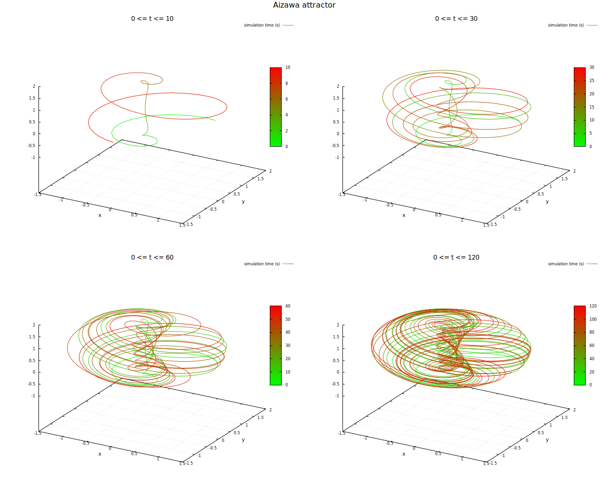
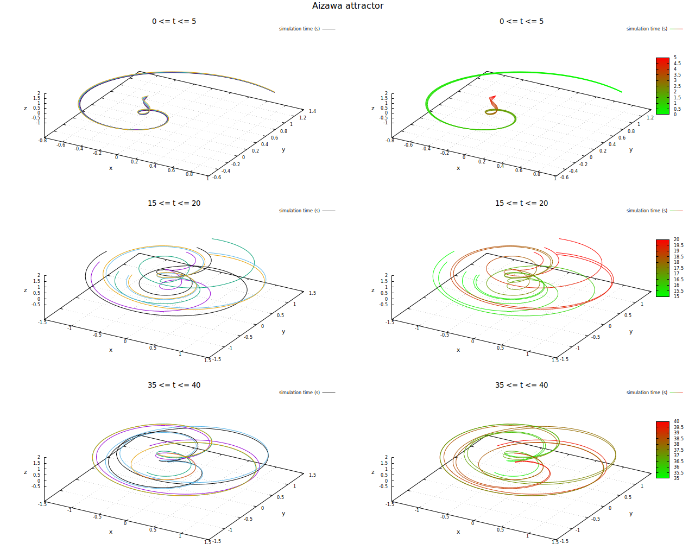

Und wieder habe ich mich mit chaotichen Systemen beschäftigt - dieses Mal, um für mich neue Visualisierungsmethoden zu untersuchen.
Das System bildet einen sehr schönen Strange Attractor aus - die Abbildung hier zeigt zunächst eine Trajektorie des Systems für unterschiedlich lange Berechnungszeiten mit jeweils identischen Anfangsbedingungen:

Aizawa-System - Trajektorie mit unterschiedlich langen Berechnungszeiten und identischen StartbedingungenDie nächste Abbildung versucht, die Tatsache zu illustrieren, dass Trajektorien, die von nahe beieinanderliegenden Systemzuständen aus starten sich nach endlicher Zeit exponentiell voneinander entfernen. Dazu habe ich Ausschnitte der Trajektorien von fünf nahe beieinanderliegenden Anfangszuständen zu unterschiedlichen Zeitpunkten dargestellt - in der linken Spalte sind die Trajektorien der einzelnen Anfangszustände jeweils verschieden eingefärbt, in der rechten Spalte ist jeweils derselbe Ausschnitt dargestellt, allerdings kodiert die Farbe nun den Zeitpunkt:

Aizawa-System - Trajektorie mit unterschiedlich langen Berechnungszeiten und identischen StartbedingungenVergleicht man die Trajektorien aus den ersten fünf Sekunden mit denen aus dem Intervall zwischen 15 und 20 Sekunden, sieht man die angesprochene Diversifizierung im Zustandsraum sehr deutlich.
Zu Ende des Intervalls zwischen 35 und 40 Sekunden kann man die fraktale Natur von Strange Attractors erahnen, die durch Strecken und Falten der trajektorien zustande kommt: Schwarz und Hellblau sich sich durch diese Operationen wieder nahe gekommen, werden sich jedoch im Weiteren wieder voneinander entfernen...
Zum Schluss hier noch eine Variante der zuletzt vorgestellten Visualisierung: Das Video stellt den Verlauf der Trajektorien für fünf minimal voneinander abweichenden Startzuständen mittels Java3D dar:
Eine Anmerkung noch zum Schluss: dieses System ist eines derjenigen, die auf extrem unterschiedlichen Zeitskalen arbeiten: Während meiner versuche experimentierte ich mit verschiedenen Anfangsbedingungen. Das System "fördert" die Zustände im inneren Kamin von -z nach z und sobald sie oben im Kamin angekommen sind, bewegen sie sich auf weiten Außenbahnen wieder nach unten wo das Spiel von vorn beginnt. Manche Trajektorien führen am Fußpunkt des Kamins sehr nahe am Mittelpunkt desselben entlang. Dort wird das System extrem langsam: für die gleiche Zeiteinheit werden die Ableitungen in x,y und z dort extrem klein - das kann sogar so weit gehen, das die Genauigkeit des Java-Typs Double nicht mehr ausreicht, um diese Werte dazustellen - in diesem Fall wird das System dann plötzlich stationär!
Das Verhalten dieses Systems kann nun auch interaktiv mittels Jupyter erforscht werden: Mein Projekt auf GitHub zum Thema Nichtlineare dynamische Systeme enthält dazu ein Notebook, das direkt über diesen Link in MyBinder gestartet werden kann.
Tags
Android Basteln C und C++ Chaos Datenbanken Docker dWb+ ESP Wifi Garten Geo Git(lab|hub) Go GUI Hardware Java Jupyter Komponenten Links Linux Markup Music Numerik PKI-X.509-CA Python QBrowser Rants Raspi Security Software-Test sQLshell TeleGrafana Verschiedenes Video Virtualisierung Windows Upcoming...


Neueste Artikel
-
 Tresenlesen - Frank und Jochen, Schausaufen mit Betonung
Tresenlesen - Frank und Jochen, Schausaufen mit Betonung
Eine Idee, regnerische und kalte Tage in der Quarantäne zu überbrücken... dieses Mal etwas Leichtes zum Schmunzeln...
Weiterlesen... -
Testdaten für ein XML Schema generieren
Ich suche immer wieder nach neuen Ideen, möglichst einfach problemangepasste Testdaten zu erzeugen. Diesmal habe ich damit begonnen, XML-Dokumente zu erzeugen, die einem vorgegebenen XML-Schema genügen sollten
Weiterlesen... -
S/MIME Email Crypto
Nachdem mich neulich ein Kollege auf eine mir bis dahin unbekannte Möglichkeit aufmerksam gemacht hat, EMail-Funktionalitäten ohne EMail-Server und -Konto zu testen holte ich ein altes Projekt aus der Versenkung hervor...
Weiterlesen...
Manche nennen es Blog, manche Web-Seite - ich schreibe hier hin und wieder über meine Erlebnisse, Rückschläge und Erleuchtungen bei meinen Hobbies.
Wer daran teilhaben und eventuell sogar davon profitieren möchte, muß damit leben, daß ich hin und wieder kleine Ausflüge in Bereiche mache, die nichts mit IT, Administration oder Softwareentwicklung zu tun haben.
Ich wünsche allen Lesern viel Spaß und hin und wieder einen kleinen AHA!-Effekt...
PS: Meine öffentlichen GitHub-Repositories findet man hier.